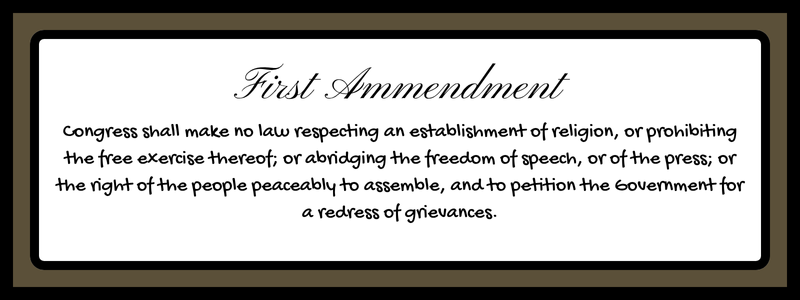

Supreme Court Cases
Here are some Supreme Court cases that have affected how our freedoms related to protesting can and can't be restricted. Remember, the Supreme Court's decisions are based on interpretation of the Constitution.
The Constitution is not being completely reinterpreted in each case, instead the justices usually rely on precedents sent by cases before them. Therefore, at the base of all these cases is how the Supreme Court of the United States as a whole has interpreted the First Amendment.

Schenck v. United States [Read]
Speech can be restricted if it causes a clear and present danger.
Gitlow v. New York [Read]
Speech can be restricted if it advocates for violent overthrow of the government.
Chaplinsky v. New Hampshire [Read]
Speech such as “fighting words” intended to provoke someone is not protected speech.
New York Times Company v. Sullivan [Read]
If slander or libel involves a public figure the figure must prove the statement was made knowingly false or without regard for whether it is true or false.
United States v. O'Brien [Read]
The government can restrict speech if the restriction promotes an important governmental interest and if the restriction promotes the interest in the least restrictive way possible. In other words, the restriction needs to have a legitimate governmental reason behind it and it can only be as restrictive as needed to promote the interest.
Tinker v. Des Moines Independent Community School District [Read]
Students do not lose their first amendment rights in school but they can be restricted more. Schools cannot stop students from using the freedom of speech unless the school can prove the speech would interfere in school in a significant way.
Brandenburg v. Ohio [Read]
The government can restrict speech that tries to incite crime if it is likely to cause such crime soon after.
Police Department of the City of Chicago v. Mosley [Read]
The government cannot give special permissions, exceptions, or restrictions for a protest based on the topic of the protest. If there were to be such a regulation it would need careful examination to prove it promotes an important government interest.
New York v. Ferber [Read]
Child pornography is not protected speech.
Texas v. Johnson [Read]
The government cannot restrict speech based on it being offensive. Especially symbolic political speech. In this instance it was specifically ruled that it cannot be illegal to burn the flag just simply based on the message behind it.
Virginia v. Black [Read]
It can be made to be illegal to burn crosses with the intent to intimidate someone but just simply burning a cross cannot be valid evidence of intimidation.
Morse v. Frederick [Read]
Schools can restrict student speech to disallow them from promoting drug use. Students do have a right to express political speech but promoting drugs goes against the mission of the school.
Snyder v. Phelps [Read]
Speech cannot be restricted just because it is upsetting or offensive.